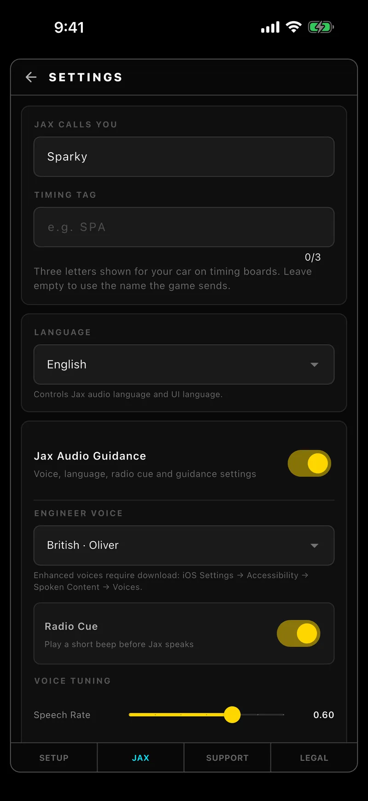
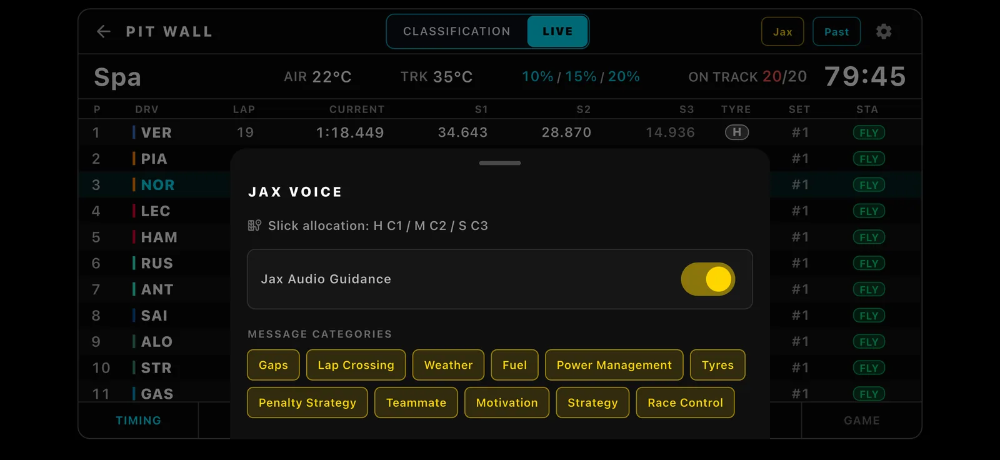
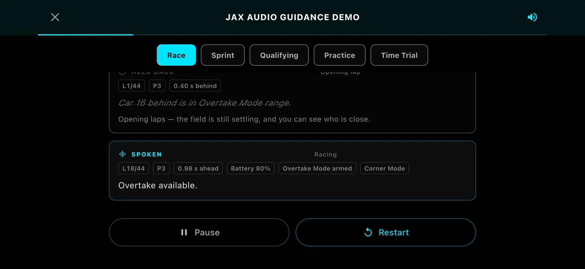

Free
- Urgent safety calls: Safety Car, VSC, red, yellow and blue flags, a penalty given to you, a stopped car ahead, traffic as you leave the pits
- Your lap at the line: lap, time and the gap ahead
- Every voice setting, the voice test and the Jax demo
How it works
Set how Jax speaks to you, choose what Jax talks about, and change it mid-session.
Jax turns live telemetry into short, timely spoken calls about gaps, tyres, fuel, weather, penalties and more. Jax speaks when it's useful and holds back when it isn't, for example during the opening laps or in the pit lane.
Open Settings (the gear icon on the Home screen), then the JAX tab:

On the Pit Wall, tap the Jax button for Quick Jax: the Jax Audio Guidance switch and the message categories, without leaving the session.

In Settings → SUPPORT, open Explore JMD Demos and play the Jax audio guidance demo. Pick Race, Sprint, Qualifying, Practice or Time Trial. Each card shows the situation and whether Jax spoke or held back, and why.
